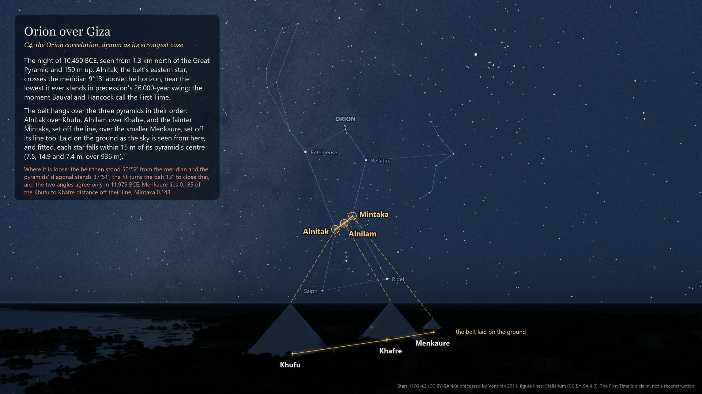
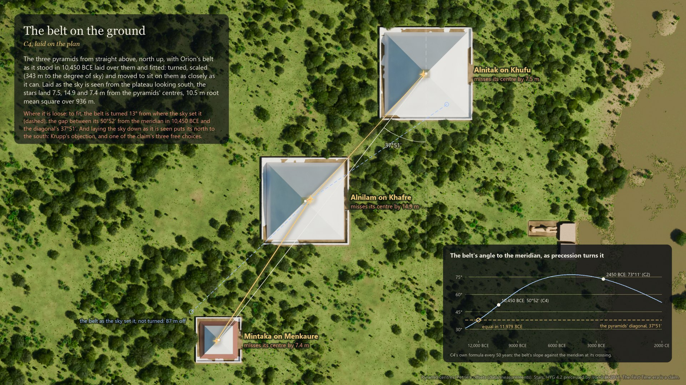
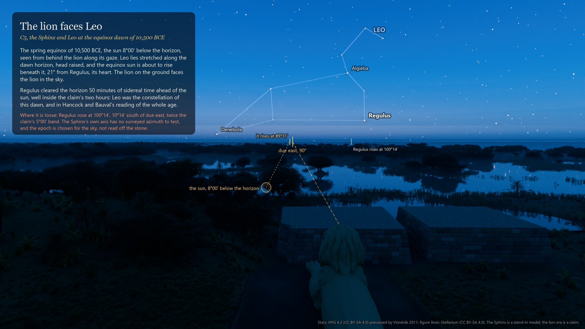
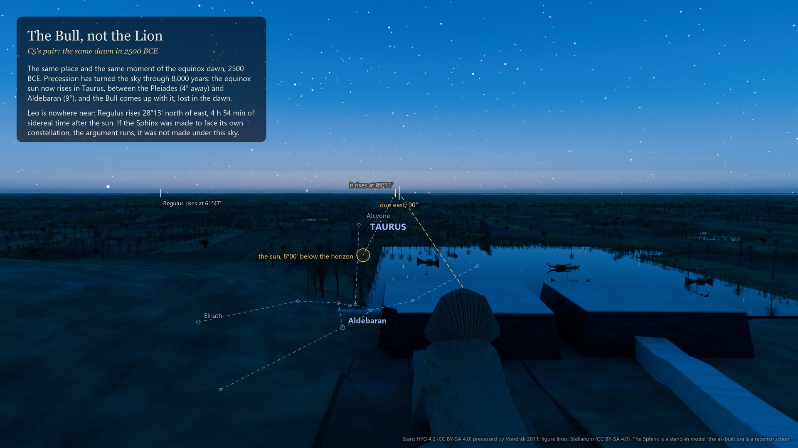
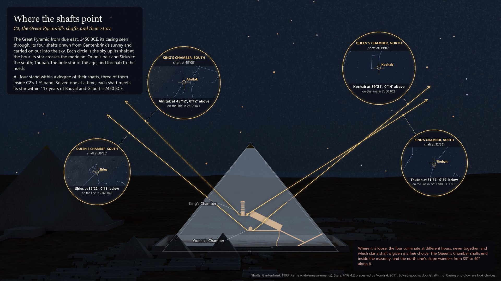
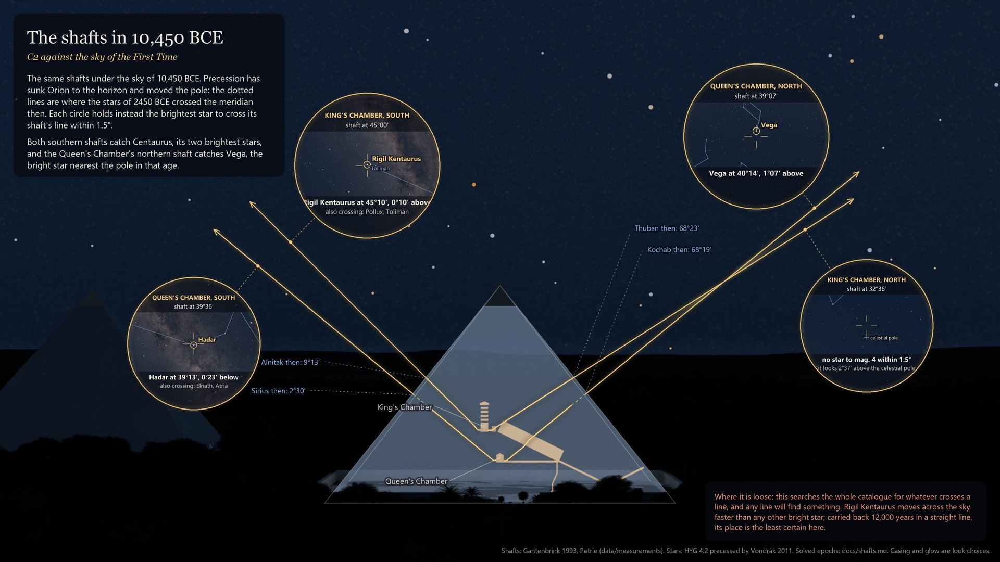

Giza at block scale · the sky
Three alignments at the heart of the case for an older Giza (Bauval, Hancock), each pictured at its strongest: Orion's belt over the three pyramids, the lion Sphinx facing Leo, the Great Pyramid's shafts reaching for their stars. Every star is where the project's sky engine puts it (Vondrák 2011 precession, the HYG 4.2 catalogue) and every number is the claims engine's own. Where a match is loose, each picture says by how much.
← The walkthrough
The night the reading calls the First Time: Orion's belt at the lowest point of its 26,000-year precessional swing, hanging over the three pyramids in their order, Alnitak over Khufu, Alnilam over Khafre, and the fainter Mintaka, set off the line, over the smaller Menkaure, set off its line too.
Alnitak on the meridian at 9°13′. Fitted on the ground, the stars land 7.5, 14.9 and 7.4 m from the pyramids' centres over 936 m.

The same three stars laid on the plan: turned, scaled to 343 m per degree of sky and moved to sit on the pyramids as closely as they can. The inset follows the belt's angle to the meridian through 14,000 years of precession.
10.5 m root mean square over 936 m. Left as the sky set it, the belt is 87 m off.
Where it is loose: in 10,450 BCE the belt stood 50°52′ from the meridian against the diagonal's 37°51′, so the fit turns it 13°; the two angles agree only in 11,979 BCE. Menkaure lies 0.185 of the Khufu to Khafre distance off their line, Mintaka 0.148. Laying the sky down as seen puts its north to the south, which is Krupp's objection.

The spring equinox, the sun 8° below the horizon, seen from behind the lion along its gaze. Leo lies stretched along the dawn horizon with its head raised, and the equinox sun is about to rise beneath it: the lion on the ground faces the lion in the sky.
The sun rises at 89°31′. Regulus clears the horizon 50 minutes of sidereal time ahead of it.
Where it is loose: Regulus rose at 100°14′, 10°14′ south of due east, twice the claim's 5° band. The Sphinx's own axis has no surveyed azimuth to test, and the epoch is chosen for the sky, not read off the stone.

The same place and moment 8,000 years later. Precession has carried the equinox sun into Taurus, between the Pleiades and Aldebaran. If the Sphinx was made to face its own constellation, the argument runs, it was not made under this sky.
Regulus rises 28°13′ north of east, 4 h 54 min of sidereal time after the sun.

The Great Pyramid from due east, its casing seen through, its four shafts from Gantenbrink's survey carried on out into the sky. Each circle is the sky up its shaft at the hour its star crosses the meridian: Orion's belt and Sirius to the south, Thuban, the pole star of the age, and Kochab to the north. All four stand within a degree of their shafts.
| Shaft | Star | Culminates at | Off the shaft | Exactly on it |
|---|---|---|---|---|
| King's south, 45°00′ | Alnitak | 45°12′ | 0°12′ above | 2492 BCE |
| Queen's south, 39°36′ | Sirius | 39°22′ | 0°15′ below | 2368 BCE |
| Queen's north, 39°07′ | Kochab | 39°21′ | 0°14′ above | 2380 BCE |
| King's north, 32°36′ | Thuban | 31°57′ | 0°39′ below | 3261 and 2333 BCE |
Where it is loose: the four culminate at different hours, never together, and which star a shaft is given is a free choice. The Queen's Chamber shafts end inside the masonry, and the north one's slope wanders from 33° to 40° along it.

Under the First Time's sky the shafts find other stars: Rigil Kentaurus up the King's south shaft at 45°10′, Hadar up the Queen's south at 39°13′, Vega up the Queen's north at 40°14′. Nothing to magnitude 4 crosses the King's north shaft, which then looked 2°37′ above the celestial pole.
Where the 2450 BCE stars culminated that year: Alnitak 9°13′, Sirius 2°30′, Thuban 68°23′, Kochab 68°19′.